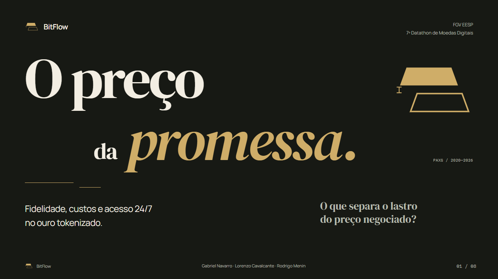
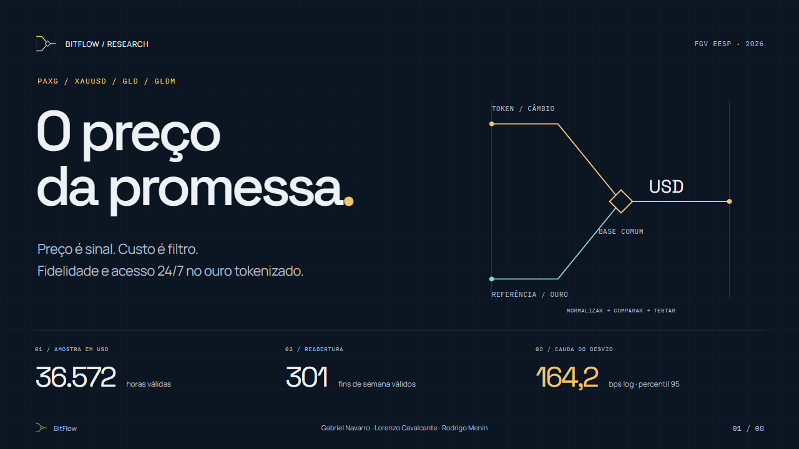
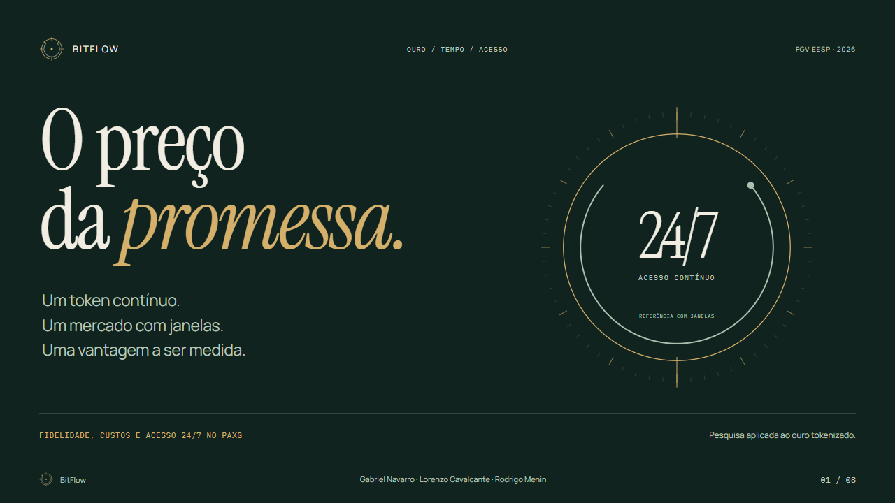

O preço da promessa / Identidade para apresentações Três formas de contarevidência. Ouro, profundidade e clareza. Três sistemas complementares para transformar o processo da pesquisa em uma apresentação com identidade — do lastro à medida, da medida ao tempo.
03 direções completas
01 / SELECIONADO ÁUREO

Lastro & evidência. Caderno de ensaio, tipografia deslocada e páginas de apuração. Uma identidade criada a partir do intervalo entre lastro e preço.
5 CORES-CHAVE
DM Serif Display Marca de intervalo
Explorar o sistema ↗ 02 / ANALÍTICO VÉRTICE

Mercado & medida. Grade precisa, números claros e geometria de mercado. Uma linguagem para explicar método, custos e evidências.
5 CORES-CHAVE
Space Grotesk Referência comum
Explorar o sistema ↗ 03 / CONCEITUAL MERIDIANO

Tempo & acesso. Órbitas, intervalos e ritmo de leitura. O calendário vira identidade para explicar o 24/7 e os limites da captura.
5 CORES-CHAVE
Instrument Serif Janela de mercado
Explorar o sistema ↗
O que permanece nas três direções
Uma identidade forte. O dado precede o ornamento. Os exemplos usam os resultados reais do projeto. Eixos, fontes e premissas acompanham os números.
Uma base para combinar. Escolha uma direção principal. As outras contribuem com composições, mantendo fontes e semântica consistentes.
Feito para apresentar. Setas, visão geral, tela cheia e impressão. Tipografia local e proporção 16:9, sem depender de conexão.